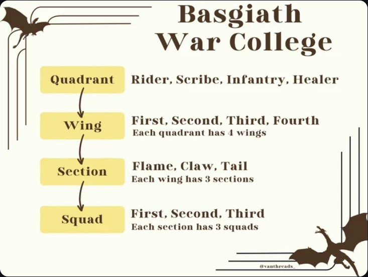

Quadrant Guide
Riders
Joining this quadrant almost certainly means death. Riders will be selected by a dragon for a lifelong bond. A Rider uses power from the dragon to power themselves (powers vary per rider, ice, lightening, shadows etc.) Riders must prove themselves physically and mentally.
Healers
Made up of Healers and Menders. Healers use tinctures and medical training. Menders use magic to heal wounds and disease.
Scibes
Scribes study the past and record the present. They are the librarians of the college and keep records and follow infantry and riders in order to record battles and events.
Infantry
Training in areas such as survival & land navigation, collaborates with the other quadrants often, biggest quadrant with over 1,000 cadets.
Quadrant Hierarchy information

This image was sourced from _vanth on Reddit.